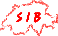

|  |
2nd PROSITE Workshop,
|
 |
|
|---|---|---|---|
List of Participants
| Chantal Abergel | IGS | chantal.abergel@igs.cnrs-mrs.fr | |
| Amos Bairoch | SIB-geneve | bairoch@medecine.unige.ch | |
| Philipp Bucher | SIB-lausanne | pbucher@isrec-sun4.unil.ch | |
| Lorenzo Cerruti | SIB-lausanne | lcerutti@clermont.inra.fr | |
| Clotilde Claudel-Renard | INRA-toulouse | crenard@toulouse.inra.fr | |
| Jean Michel Claverie | IGS | jmc@igs.cnrs-mrs.fr | |
| Emmanuel Courcelle | INRA-toulouse | emmanuel.courcelle@toulouse.inra.fr | |
| Laurent Falquet | SIB-Lausanne | laurent.falquet@isrec.unil.ch | |
| Alexandre Gattiker | SIB-Geneve | gattiker@isb-sib.ch | |
| Nicolas Hulo | SIB-Geneve | Nicolas.hulo@isb-sib.ch | |
| Daniel Kahn | INRA-Toulouse | dkahn@toulouse.inra.fr | |
| Dmitri Kouznetsov | SIB-Lausanne | Dmitry.Kuznetsov@licr.org | |
| Marco Pagni | SIB-Lausanne | mpagni@isrec.unil.ch | |
| Cedric Notredame | IGS | cedric.notredame@igs.cnrs-mrs.fr | |
| Hiroyuki Ogata | IGS | Hiroyuki.Ogata@igs.cnrs-mrs.fr | |
| Christian Sigrist | SIB-Geneve | Christian.Sigrist@isb-sib.ch | |
| Anne-Lise Veuthey | SIB-Geneve | anne-lise.veuthey@isb-sib.ch |
Questions should be sent to C.Notredame or L.Falquet